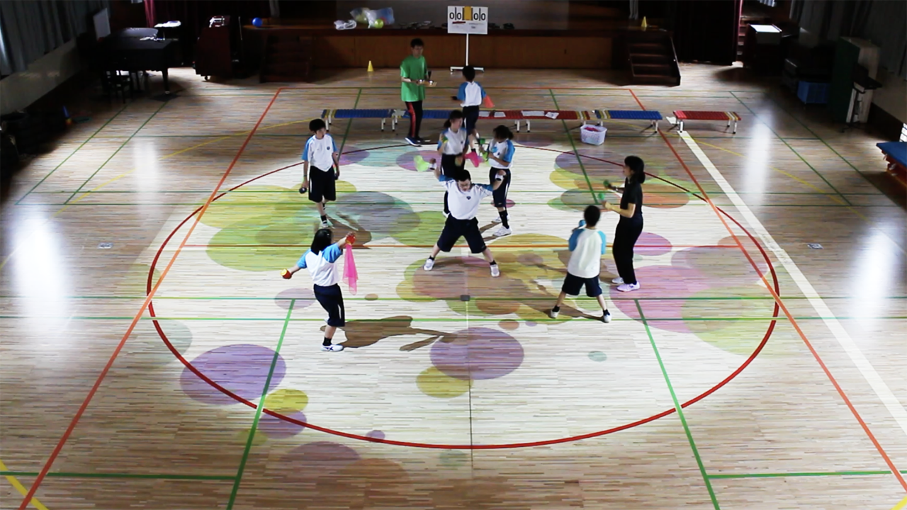
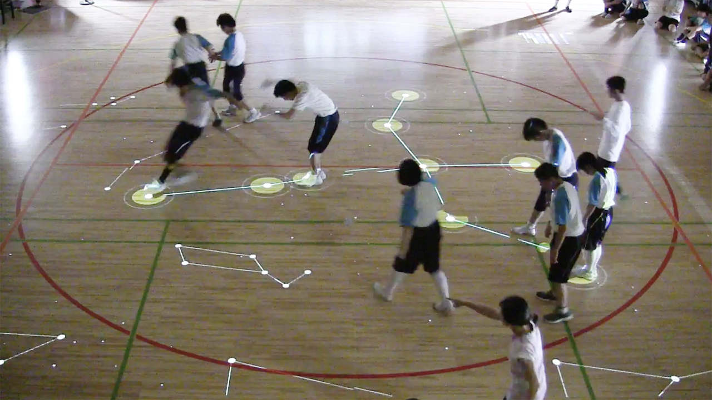
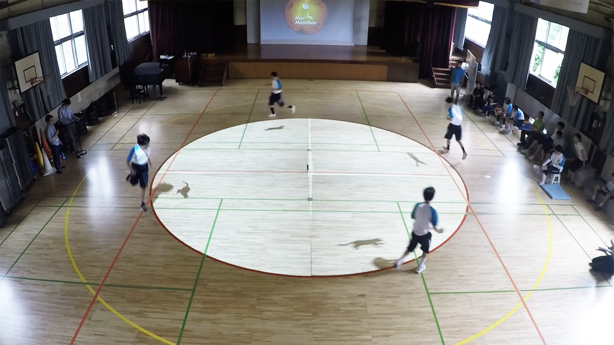
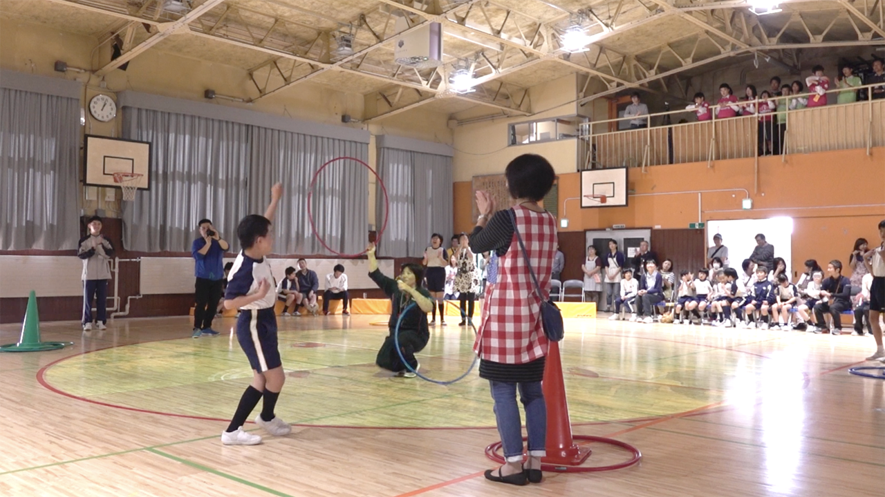
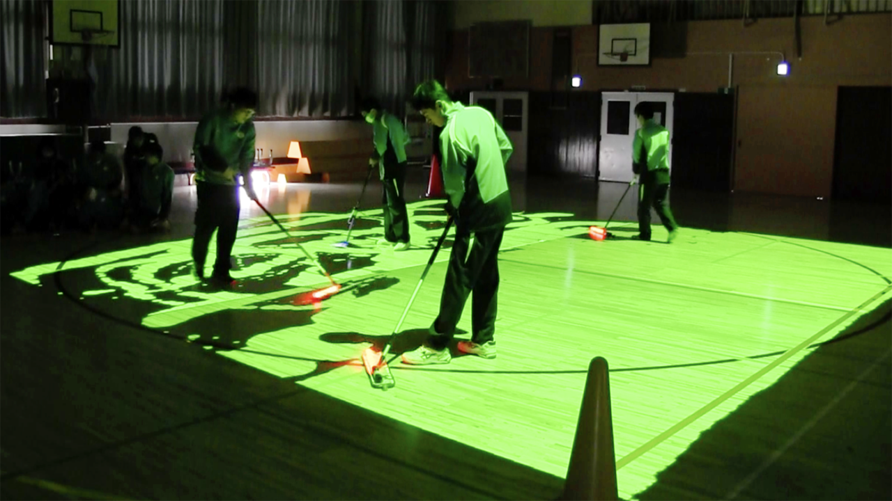

FUTUREGYM: An Augmented Gymnasium for Children with Special Needs

My challenge in this project was to elicit positive behaviors from people. One of my representative design challenges, FUTUREGYM, aimed to develop the social interactions of children with special needs. The goal was to give them the opportunity to learn among their friends, to deepen social relationships, whether individuals were neurotypical or not, and to build self-esteem in order to realize a successful inclusive education.
The project sought to establish a needs-based approach through the use of interactive technologies. One of the most important and effective tools to support the children's activities was the interactive floor projection. It was used not only for navigating or guiding them to a certain state but also for providing individual visual aids aimed at voluntary and wayfinding behaviors.
FUTUREGYM was installed with a Spatial Augmented Reality (SAR) system using projection mapping at the Special Needs School at Otsuka in Tokyo, Japan. The school was affiliated with the University of Tsukuba and provided systematic courses of special education that were consistent throughout preschool, elementary, junior high, and high school for children with special needs, mainly Autism Spectrum Disorders (ASD) and/or mental retardation. The following pages explained the activities carried out at FUTUREGYM.
Constellation Game

The Constellation Game was designed to provide opportunities for helping behaviors by defining a common goal. Each participant in the game was asked to stand on a star projected on the floor with the common goal of forming a constellation. When all the stars were covered by the players, an image of the constellation appeared on the floor. Because the shared goal required awareness of peers' challenges, it successfully facilitated helping behaviors during the game. In addition, the experimental results suggested that the game stimulated children to show more helping behavior when a positive mood developed among them. It was believed that the association of these behaviors would enhance the learning and performance of helping behaviors.
Circle Run

Circle-Run overlaid a pacemaker on the floor for group running and had been shown to effectively enable children with autism to coordinate their pace and position while running. In addition, a change in behavior during the group run was observed after the intervention using the pacemaker superimposed on the floor. The running formation showed improvements after the pacemaker trial compared to the pre-trial. The result established that the visual aid enabled them to maintain their speed and position based on their voluntary wayfinding behavior. In the pre-trial, each runner was required to be aware of the pace and position of the other three runners in order to comprehend the running formation before deciding whether to accelerate or decelerate their own pace. In contrast, the trial condition required each runner to perceive only one animal's speed and position, which simplified the task. It was assumed that running with the pacemaker enabled them to formulate a method to realize the desired running formation. According to this preliminary result, it was verified that the visual aid could modify the students' walking behavior. It showed potential for application in supporting children's behavior of paying attention to others, which was a critical factor for effective interpersonal interactions.
Hoop Hunting

This was a case study of the design of an augmented gymnasium for technology-assisted instruction in a special needs school using an empathic design approach. Through careful design consultations with the school's teachers, a full-body interactive learning game called Hoop Hunting was created for children with ASD. A total of five researchers, twenty-one teachers, and sixty-four students participated in the study. Three observations, three workshops, six meetings, and two feasibility studies were conducted with the participants. The game was evaluated in a feasibility study with twenty-three children (20 males, mild/moderate ASD, 6-12 years old). The results confirmed that 95.7% of the children were able to complete the task presented in the game and indicated that the game had the potential to help them focus their attention on learning by introducing an element of fun. The study reinforced the importance of an empathic design approach in a special needs school setting for the development of an advanced platform for technology-assisted education in a special education setting. It helped the study participants learn more about the problems, needs, and strengths of children with ASD and provided an appropriate solution.
Mop Game

A learning support game for cleaning, called Mop Game, was developed with teachers at Otsuka Special Education School affiliated with Tsukuba University. The game used mixed reality technology from FUTUREGYM installed in the school. The game aimed to stimulate students' interest in cleaning and helped them learn to use cleaning tools in a fun way. The usability of the game was confirmed by a feasibility test conducted with 24 students. The results showed that the game was sufficiently interesting for the students and that the level of the tasks in the game was appropriate for them. In addition, it was found that the game was potentially useful in promoting students' cooperative behavior and training tidiness for cleaning.
Reference
M. Oki, S. Akizuki, B. Bourreau, I. Takahashi, Y. Aoki, J. Yamamoto, and K. Suzuki, “Supporting collective physical activities by interactive floor projection in a special-needs school setting,” International Journal of Child-Computer Interaction. 32: 100392, 2022. DOI: 10.1016/j.ijcci.2021.100392
M. Oki, B. Bourreau, I. Takahashi, and K. Suzuki, “CANVAS: A Drawing Tool for AR-aided Special Needs Education using Interactive Floor Projection,” Proceedings of the 2019 IEEE International Conference on Systems, Man and Cybernetics (SMC). 2639-2644, 2019. DOI: 10.1109/SMC.2019.8914003
I. Takahashi, M. Oki, B. Bourreau and K. Suzuki, “Designing Interactive Visual Supports for Children with Special Needs in a School Setting,” Proceedings of the 2018 ACM SIGCHI Conference on Designing Interactive Systems - DIS '18. 265-275, 2018. DOI: 10.1145/3196709.3196747 (Honorable Mention Award)
I. Takahashi, M. Oki, B. Bourreau, I. Kitahara, and K. Suzuki, “An Empathic Design Approach to an Augmented Gymnasium in a Special Needs School Setting,” International Journal of Design. 12(3): 111-125, 2018. HTML
I. Takahashi, M. Oki, B. Bourreau, I. Kitahara, and K. Suzuki, “FUTUREGYM: A Gymnasium with Interactive Floor Projection for Children with Special Needs,” i. International Journal of Child-Computer Interaction. 15: 37-47, 2018. 10.1016/j.ijcci.2017.12.002
謝淳, 髙橋一誠, 大木美加, ブローバティスト, 北原格, 鈴木健嗣, “視覚教示による学習支援のための大規模床面投影システム,” 電子情報通信学会和文論文誌Ａ, J102-A(2): 68-79, 2019.